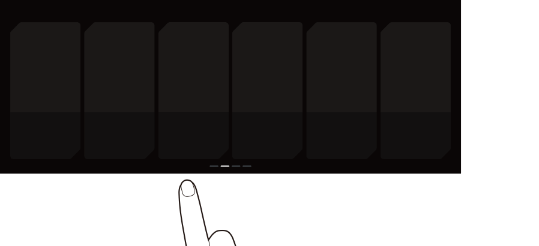

Using the home screen
Home screen
The Home screen consists of several pages. To move between pages, swipe left or right on the touch screen.
- To return to the Home screen from other screens, press
 .
.


Warning
- • The video screen is disabled while driving, to ensure safety. To watch a video, stop the vehicle first. If the vehicle has a manual transmission, you can watch video after engaging the parking brake. If the vehicle has an automatic transmission, you can watch video after shifting to "P" (park) or engaging the parking brake.
- • Some functions may not be active while driving, to ensure safety. Those functions run only when the vehicle is stationary. In order to use them, first stop the vehicle.
- • If the screen is not displayed, the volume is muted or other system failures occur, immediately stop using the system. If you use the faulty system continuously, a fire, electric shock, or fatal system failure may result.

Caution
- • If you use the system with the vehicle turned off, the battery warning message appears. The warning message disappears as soon as you turn on the vehicle.
- • Do not press the touch screen with excessive force or a sharp object. The touch screen may become damaged.
- • Do not let any electrically conductive material contact the touch screen, and do not place any objects that generate electromagnetic waves, such as wireless chargers or electronic devices, near the touch screen. The system may work incorrectly due to electromagnetic effects, which may cause the touch screen to malfunction.
- The touch screen does not respond when you are wearing gloves. Take off your gloves or wear electrostatic touch gloves.
Changing the Home screen layout
To change the location of an icon, press and hold, and drag the icon to the desired position.
Customise the arrangement of menu items on the Home screen.

Viewing the Home screen
Press on the Home screen and swipe left, as shown below.
You can see the list of all functions of the system.
Using the Menu Bar
Use the menu bar to display the previous screen, Home screen or menu list.

- Return to the previous screen.
- Displays the Home screen.
- Displays the list of menus.